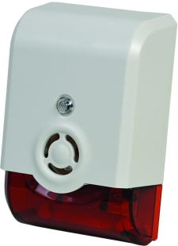
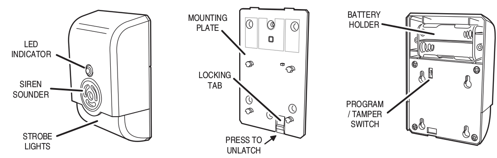

GOCONTROL SIREN¶
GoControl Z-Wave Siren and Strobe, WA105DBZ-1¶

Specification¶
Power Supply 4 Type “AA” Alkaline batteries Frequency 908.42 MHz Audible Alarm >105 dB @ 3 feet Strobe White LED with red lens Operating Temp 5°F~140°F / -15°C~ 60°C Repeater No Range Up to 100 feet line of sight between the Z-Wave Controller and/or the closest Z-Wave Repeater
Basic operation¶
When triggered, the siren/strobe will trigger for 30 seconds (default setting). During that time the siren will emit a very loud pulsating audible alarm at 105 db. The integrated strobe light will also flash during the 30 seconds. CAUTION: This is an extremely loud siren, do not place it near your ear.

Include/Exclude to/from a network¶
- Put controller to “Inclusion” mode
- Place the siren/strobe within 3 feet of the Controller
- Press Program/Tamper switch for 1 second then release. The LED will blink to indicate include/exclude process completes
Link in Amazon¶
Configuration description¶
- Parameter 0: Siren / Strobe Mode
By default, the siren and strobe will activate when turned on. To activate the Siren only, set parameter 0 to 1. For strobe only set to 2. - Parameter No: 0 - Length: 1 Byte - Valid Values = 0 (default) or 1 or 2. Default is 0.
- Parameter 1: Auto Stop Time
By default the auto stop time is 30 seconds. Setting parameter 1 to 1 will increase the time to 60 seconds. Changing it to 2 will increase the stop time to 120 seconds. Setting the stop time to 3 will turn off the auto stop and will require a command from the Controller to turn the siren/strobe off. - Parameter No: 1 - Length: 1 Byte - Valid Values = 0 or 1 or 2 or 3. Default is 0.